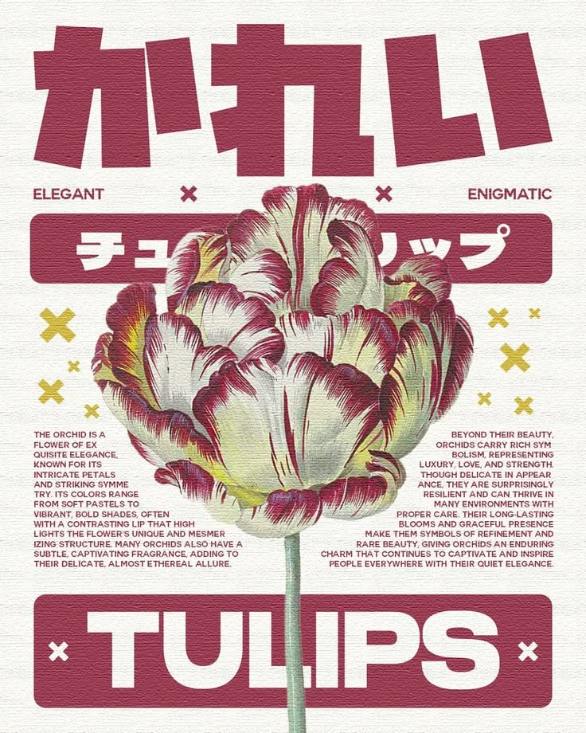
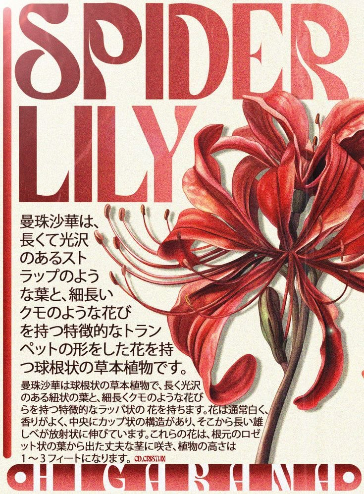

Play with cherry, you know i know what is the true
La creatividad es el eje que nos mueve, ese impulso de querer crear algo más allá, de expresar lo que habita en los rincones más profundos del alma. Ya sea en una pintura, una canción, un silbido durante un paseo o una simple broma, todo lleva una pizca de creatividad.
Eso que nos permite dejar salir lo que somos es lo más hermoso que existe. No se trata de si eres bueno o malo, se trata de hacerlo. Porque pierde más el que no arriesga que el que decide lanzarse al abismo. Abajo solo te espera el golpe, quitarte el polvo y seguir — pero si nunca te tiras, jamás sabrás qué hay en el fondo.
CherryBerryBOYS es un colectivo que nace del deseo de construir una identidad que abrace el arte y la creatividad. No somos nada de otro mundo, no somos la gran revelación, pero somos nosotros: una familia. Donde el resto levanta muros y se encierra, se vuelven herméticos, grises, nosotros escogimos el color. Escogimos la cercanía, no por practicidad ni interés, sino por amor al arte.
El arte ha estado ahí desde los inicios de los tiempos. La pintura más antigua data de hace 45.500 años, en la cueva Leang Tedongnge — y nos importa ese dato porque nos recuerda algo: crear es tan humano como respirar. Siempre ha estado con nosotros. No hay mejor sensación que volcar en una representación artística lo que más adentro guardas. Y el arte no se cierra a una sola forma de expresarse, existen infinidad de caminos para demostrarlo. No por nada existe el arte de amar. La palabra arte no es un limitante, al contrario, es un horizonte de posibilidades infinitas.
El mundo necesita gente creativa. El mundo necesita refrescarse. El mundo necesita el arte en cualquiera de sus expresiones: pintura, música, baile, humor, cine. Todo donde se vuelquen sentimientos tiene un aporte. Pero cuando decimos mundo, no hablamos del planeta ni de la gran concepción colectiva — hablamos de tu mundo. De ese espacio en tu cabeza donde los pensamientos continuos quizás atormentan, quizás acompañan, pero siempre están ahí. Por eso no es un aporte al "mundo", es un aporte a "tu mundo", ese personal que, aunque a veces roto, tiene algo que mostrar.
Y ese algo merece salir.

